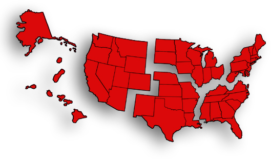

|
tIf you do not see your conference listed, please contact your conference office for information.

Western Jurisdiction | North Central Jurisdiction | Northeastern Jurisdiction | South Central Jurisdiction | Southeastern Jurisdiction Jurisdiction
Western Jurisdiction
California-Nevada Conference
Connection
California-Pacific Conference
Circuit West United Methodist Review
Cal-Pac News Desert Southwest Conference
The Desert Connection Oregon-Idaho Conference
United Methodist Online
Pacific Northwest Conference
Channels
PNW News Digest
Rocky Mountain Conference
RMC News
The New Vision
Yellowstone Conference
The Yellowstone Connection
North Central Jurisdiction
Dakotas Conference
Today's News
Detroit Conference/West Michigan Conference
Michigan Christian Advocate
East Ohio Conference
East Ohio Joining Hands
East Ohio E-News
Illinois Great Rivers Conference
The Current
The Current Week in Review
Indiana Area (North Indiana Conference/South Indiana Conference)
Hoosier United Methodists Together
e-HUM
Iowa Conference
Iowa Conference Edition of The United Methodist Reporter
Minnesota Conference
Northern Bytes
Northern Illinois Conference
The Reporter
West Michigan Conference/Detroit Conference
Michigan Christian Advocate
West Ohio Conference
NewsNET
Wisconsin Conference
Conference News & Events
Northeastern Jurisdiction
Baltimore-Washington Conference
UMConnection
Central Pennsylvania Conference
Link
Eastern Pennsylvania
NEWSpirit
Greater New Jersey Conference
The Relay Online
New England Conference
SpiritNET New York Conference
The Vision
North Central New York Conference
Connections
Peninsula-Delaware Conference
Communicator
Troy Conference
The Connection
West Virginia Conference
The West Virginia United Methodist Western New York Conference
Western New York United Methodist Spectrum
Western Pennsylvania Conference
InterLink
Cross & Flame
Wyoming Conference
Connections
South Central Jurisdiction
Arkansas Conference
E-News In Review
Central Texas Conference
The Central Link Kansas West Conference
Connection
Louisiana Conference
Louisiana NOW!
Missouri Conference
The Missouri Conference Review
Bridges
Nebraska Conference
UMConnect
New Mexico Area Conference
New Mexico United Methodist Reporter
North Texas Conference
North Texas United Methodist Reporter Northwest Texas Conference
eCONNECT
Northwest Texas United Methodist Review
Oklahoma Conference
The Oklahoma United Methodist Contact Oklahoma Indian Missionary Conference
The Advocate
Rio Grande Conference
The Rio Grande Record
Southwest Texas Conference
United Methodist Witness
Texas Conference
Cross Connection
Southeastern Jurisdiction
Alabama-West Florida Conference
NewsCONNECTION
The Narrator
Florida Conference
Florida United Methodist e-Review
Holston Conference
The Call
Kentucky Conference
NetNews
Memphis Conference
Memphis United Methodist Reporter
Mississippi Conference
Mississippi United Methodist Advocate
North Alabama Conference
e-Voice
North Carolina Conference/Western North Carolina Conference
Vital Signs and Missions Alive!
Newsbriefs
North Carolina Conference Christian Advocate
Connections for Ministry
North Georgia Conference/South Georgia Conference
Monday Morning in North Georgia
Wesleyan Christian Advocate Red Bird Missionary Conference
The Cardinal
South Carolina Conference
South Carolina United Methodist Advocate
South Georgia Conference/North Georgia Conference
Monday Morning in North Georgia
The Link
Wesleyan Christian Advocate
Tennessee Conference
News & Info
Tennessee Conference Review
Virginia Conference
Publications (all)
Western North Carolina Conference/North Carolina Conference
Vital Signs and Missions Alive
Connections for Ministry
|